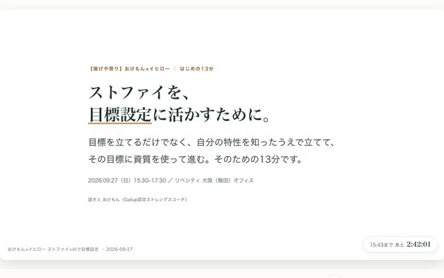
9/27 説明13分スライド＋手元ワークシート（2026-09-26）
2026-09-27 イヒローさんコラボオフ会（ストファイ×稼げや祭りの目標設定）
明日のイヒローさんとのオフ会に向けて資料完成させたいなぁ🤔 何があればあすのオフ会が良いものになるだろう・・🤔 とりあえずストファイを目標設定に活かしていくためにってしてんだよね🤔 ただ目標を立てるだけじゃなくって自分の特性を理解して目標を立てるって考え方と、立てた目標に対してストファイをどう活用していくのかっていう2つの視点があるなぁと思って🤔
本人がAIへ頼んだ言葉の原文
森：ゆいCPO/PJ_2026-09-27_イヒローさんコラボオフ会/PROCESS.md
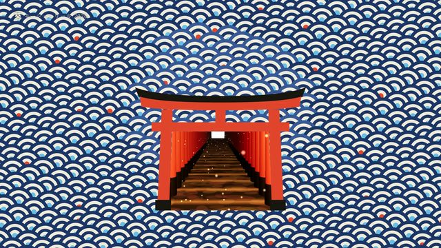
一筆（ひとふで）— 葵 モーションリール 2026
Xで見た「Opus 5.5 を Max effort にして、15秒のショーリールを一発で作らせた」動画と同じお題を、うちのAI（葵）が全力でやったらどうなるかの実験。おけちゃん「うちもこれに沿ってフルパワーでいっこ作ってみよー」
道具Claude Code（Claude Opus 5.5・effort max）。動画はHyperFrames（HTMLを1コマずつ撮る）で、音楽も効果音もPythonで合成。15秒・1920×1080・60fps
参照なし（履歴書の写真欄だけ、森にある葵の画像を切り出して使用）
make a dynamic 15-second motion graphics video that shows what an incredible motion designer you are, like it's your showreel for a résumé. go all out.
うちが足したのは、途中の2言（下の「流れ」）だけ。構成の指定・スタイルの指定・技の指定は一切していない。
森：outputs/fullpower-showreel-2026-09-26/PROCESS.md
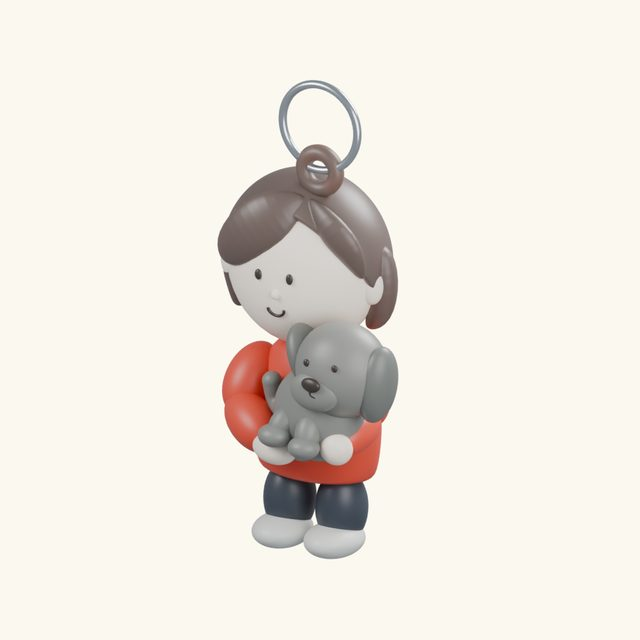
WANKO — full volumetric keychain
User correction preserved in the parent brief: 「これはただのバッジだよね。立体化させてほしい。まず三面図とか作った方が良い」. Follow-up: 「バッジとキーホルダーとラインナップがふえたってことにしよう🤣」.
道具Codex native subagent (Astra was requested by the parent; runtime model ID is not independently verified). Local Blender 5.2.1 LTS, procedural Python (build.py, sculpt_tools.py, and sibling ../common…
Need actual full volumetric 3D Blender figurine keychains based on original icons. Soft matte chibi collectible toy 2–2.5 heads tall with full rounded head, hair, torso, arms, legs/shoes; dog rounded body/ears/legs held by girl's hands. No disks, plaques, billboards, extruded raster or texture-mapped badge allowed. Original identity/readability is paramount. Backside and unseen lower body can be reasonable inferred design; document. Smooth shape transitions. Body ~56mm. Printable solid via voxel merge can be separate from visual semantically separated geometry; add hole after remesh. Need .blend, GLB, STL mm, beauty transparent render + front/side/back QA with actual volumes.
森：outputs/icon-keychain-studio-2026-09-26/figurines/wanko/PROCESS.md
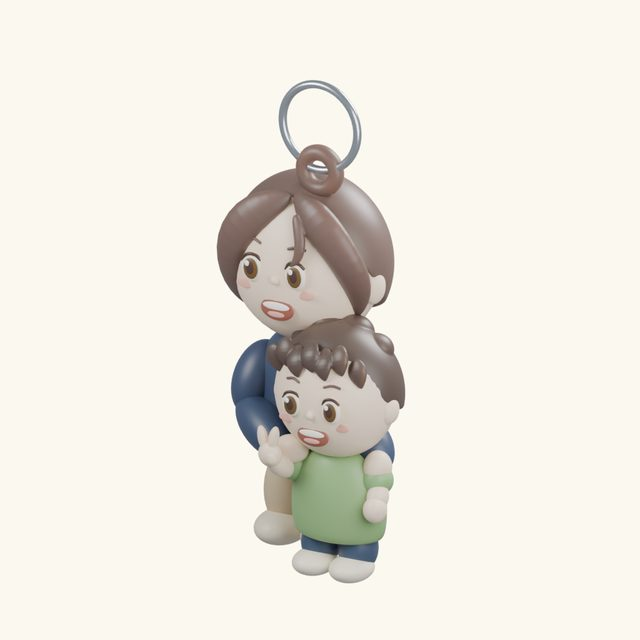
OYAKO — full volumetric keychain
User correction preserved in the parent brief: 「これはただのバッジだよね。立体化させてほしい。まず三面図とか作った方が良い」. Follow-up: 「バッジとキーホルダーとラインナップがふえたってことにしよう🤣」.
道具Codex native subagent (Astra was requested by the parent; runtime model ID is not independently verified). Local Blender 5.2.1 LTS, procedural Python (build.py, sibling ../wanko/sculpt_tools.py, and…
Need actual full volumetric 3D Blender figurine keychains based on original icons. Soft matte chibi collectible toy 2–2.5 heads tall with full rounded head, hair, torso, arms, legs/shoes; dog rounded body/ears/legs held by girl's hands. No disks, plaques, billboards, extruded raster or texture-mapped badge allowed. Original identity/readability is paramount. Backside and unseen lower body can be reasonable inferred design; document. Smooth shape transitions. Body ~56mm. Printable solid via voxel merge can be separate from visual semantically separated geometry; add hole after remesh. Need .blend, GLB, STL mm, beauty transparent render + front/side/back QA with actual volumes.
森：outputs/icon-keychain-studio-2026-09-26/figurines/oyako/PROCESS.md
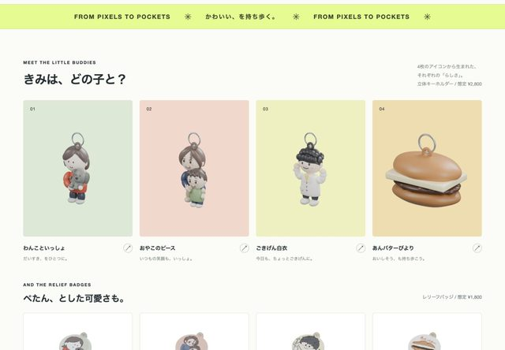
ICON CLUB — アイコンから、持ち歩く立体へ
2026-09-26 共有ページ公開済み。立体キーホルダー4体＋レリーフバッジ4種類。
添付した4枚のアイコンを、本当に厚みのある3Dフィギュア型キーホルダーへ立体化するための、三面図の設計画像を作成してください。あなたは画像生成担当です。説明文だけではなく、画像生成を実行してください。 1枚の高解像度の縦長シート、4行×3列。各行に同じキャラの正面 FRONT・真横 SIDE・真後ろ BACKを、同じ縮尺・同じ高さ・同じポーズで並べてください。正投影に近いカメラ、白背景、薄い接地影、柔らかなスタジオ照明。テキストは英語の短い見出しだけ。 行1 WANKO: 赤い服の女の子が、濃い灰色の垂れ耳の犬を抱いている。元の茶色のボブ、シンプルな黒い目、ほほえみ、赤い服、犬をぎゅっと抱く位置関係を残す。 行2 OYAKO: 茶色ショートボブで紺色の服の母と、その前に緑色Tシャツでピースしている男の子。2人を1つのまとまった親子フィギュアにする。元の笑顔と髪型・服色を保つ。 行3 HAKUI: ふわっとした黒髪、白衣、黄色の襟元、両手をあげたごきげんな人物。元絵らしい大きい頭と可愛い顔。白衣の下は紺のパンツと白い靴で自然に補完。 行4 ANBATA: あんバターの丸パン。丸く膨らんだ上のパンと下のパン、厚みのある濃いあんこ、分厚い淡黄色のバターを挟む。これは食べ物型のミニチュア。元絵の上の文字は造形にしない。 【最重要】円盤、平たい板、缶バッジ、アクリルスタンド、レリーフ、写真を貼った平面にはしない。全方向から丸い体積がある、手のひらサイズのソフビ・ポリレジン風コレクタブルフィギュアにする。横から見た頭は球体に近い十分な奥行き、後頭部に髪、胴体も腕も丸い。人物は2〜2.5頭身で足まである完成した体。元絵にない下半身と背面は、元の雰囲気に合う簡潔な形で補完する。 3Dプリンターでの試作に向けて、細すぎる指や宙に浮いた小物は避け、握りこぶしやピースは太く可愛く、手足と犬は胴につながる。頭頂などに小さな一体型の吊り穴を付けるが、大きな金属リングは三面図では省いて形状を見やすくする。マットで少しつやのある塗装、滑らかな曲面、色は元絵に忠実。 画像として、立体の構造が一目で分かる魅力的な三面図にしてください。
原文は design-v2/CHATGPT_IMAGE_PROMPT.txt
森：outputs/icon-keychain-studio-2026-09-26/PROCESS.md
カピ島（カピバラ版クラブペンギン）
Xで話題になっていたIshaan Kalraさんの「Opus 5.5がワンショットで作ったカピバラ版クラブペンギン」（capy-island.vercel.app）を見て、本人「TTPして」（【台帳】1日1AI実験_でんじろう式.md 2026-09-24 16:47行）。本家のコードは見ずに、お題1行＋日本版の味付けで一発書きを試した。
道具Claude Code（Opus 5.5）※画像・動画・音楽生成ではなく、コード一発書きの指示文
参照なし（本家capy-island.vercel.appのコードは見ていない。独自実装）
クラブペンギン、ただしカピバラで。日本版。 （本家のページとコードは見ずに、独自実装で）
※これはREADME l.4-7にある「お題」の原文そのもの。この後に渡した日本版の味付け詳細（須磨の浜・ゆず湯・ディスコ「アナグラ」・帽子屋にインコ、等）を含む逐語のフル指示は下記「プロンプト原文」の節の通り回収待ち。
森：outputs/ai-treasure-box/showcase/runs/2026-09-24-capy-island/PROCESS.md
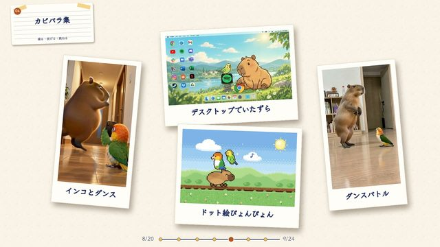
おけもんの1ヶ月 作品集ムービー（v1・v2）
2026-09-24 21:30のAIシェア会に向けて、「青春18きっぷに乗ったこととか、妄想ムービーをたくさん作ったこととか、あとはアストラでいろんなものを作ったこととか、なんかその辺を、写真のクリップみたいな感じで、どんどんどんどん『こんなん作ったよ』みたいな作品集が流れていくようなムービーにしてくれたら嬉しい」（本人・2026-0…
道具Suno（Pro・v5.5・Advanced・Lyrics欄は空＝Instrumental、128 BPM指定）
参照なし
instrumental, no vocals. progressive electro house, 128 BPM, soaring melodic lead, energetic pluck riff, tight driving bassline, crisp claps, long tension buildup into a bright sky-high drop, hopeful and powerful, motivating running energy, clean modern production
出典：はるかCEO/【制作メモ】OKEMON_EDM_MIX_2026-09-08.md 20〜26行目の「07」グループのスタイルプロンプト。採用曲「07a Sky Drop」（~/Downloads/OKEMON EDM MIX 07 - Sky Drop.m4a）はこのプロンプトから生成された1本（★採用）。v1・v2とも同じ曲・同じ切り出し開始位置（43.939秒）を使っている。
森：outputs/okemon-monthly-works-2026-09-24/PROCESS.md
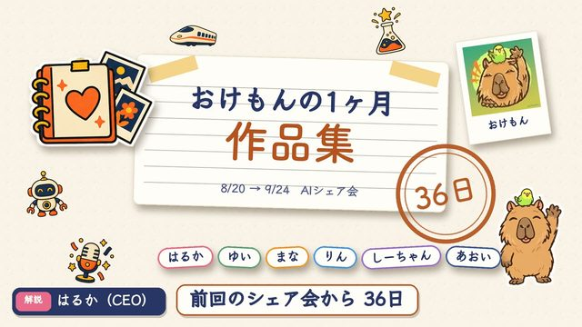
おけもんの1ヶ月 作品集ムービー v3
9/24のAIシェア会で流した作品集（v2）に、入っていなかった2作品を足した版。おけちゃんの頼み方はこれ。
道具Python＋PIL＋ffmpeg／ffmpeg／手持ちPNGの重ね合わせ／Fish Audio TTS s2.1-pro-free／whisper small／make_talk.speaker_gains／Suno「Sky Drop」
台本：みずのさんの自己紹介アニメも！インコと一緒に、サウナ、たまごサンド、夢のみずの城まで30秒で。 送信：みずのさんの自己紹介アニメも！インコと一緒に、サウナ、たまごサンド、夢のみずのしろまで30秒で。
台本：水曜AIラジオのオープニングも、秋バージョンに衣替え！森のブースで、カピバラのおけもんが放送中！ 送信：水曜AIラジオのオープニングも、秋バージョンにころもがえ！森のブースで、カピバラのおけもんが放送中！
森：outputs/okemon-monthly-works-2026-09-24/v3/PROCESS.md
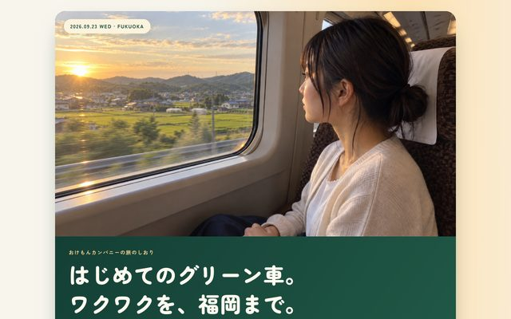
福岡わくわく遠足のしおり（画像拡充版）
本人「ワクワクする画像で埋め尽くして」「人生初のグリーン車」（assets/wakuwaku-20260922/README.md）を受け、旅程の実務情報（新幹線・夜行バス・講演会）に、旅の期待感を伝えるAI生成の想像写真を足して「旅のしおり」に仕立てた。
道具built-in image_gen（具体モデル名の記載なし）
参照「アマン元映像」の07秒・14秒フレーム（はるかの顔立ちの参照のみ。ポーズ・表情は転写しない方針）
Create one independent 16:9 landscape candid photograph, NOT a collage. The two references are the same fictional ADULT Japanese woman Haruka, facial anatomy guidance only. Reconstruct her face in the requested NEW rotation and expression, do not paste her reference face. Natural dark eyes, wispy bangs, dark hair loosely tied back, soft oval face, subtle chin mole, no makeup look and real unretouched skin. Ivory light cardigan, white top, navy skirt. The camera is held by her unseen partner; no visible partner. Ordinary personal travel snapshot with neutral color, environmental detail and imperfect framing, not advertising, not a glamorous beauty shoot. No text/logos. Each photo depicts a different action and facial-muscle state; execute the action rather than default smiling at camera. Wide shot from slightly BEHIND her aisle-side shoulder in a Japanese N700 Green Car at sunrise, brown fabric roomy seat and white headrest. She is on right side of frame, her body and head turned a full 90 degrees LEFT toward the large window, only ONE eye and the side contour of her nose visible. Completely relaxed closed mouth, eyebrows at rest, quietly absorbed in sunlit countryside. Her hands rest on her lap. Window dominates left half. No turn back, no visible teeth, no leaning the ear toward a shoulder. It should feel like catching her unaware as she watches scenery.
（★採用版：assets/candid-v2-20260922/01-window-profile.jpg。原文は同フォルダ prompts.json の 01-window-profile に保存済み。旧版assets/wakuwaku-20260922/01-first-green.jpgはこの表情修正で差し替え済み・履歴として残る）
森：ゆいCPO/PJ_2026-09-23_9月福岡行き/PROCESS.md
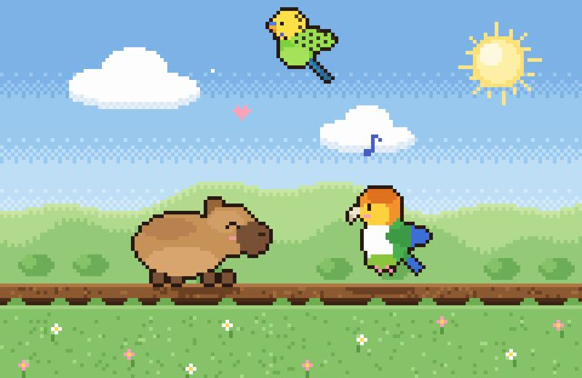
ぴょんぴょん日和（シロハラインコ×カピバラ×セキセイインコ ドット絵）
本人「この内容をもとに、水野さんのシロハラインコとおけもんのカピバラとセキセイインコが楽しそうに飛び跳ねているドット絵を作ってください！✨ 自由に飛んだり動く感じにしてね！🐥🐹🐦」（水野さんの投稿画像を添付・2026-09-23、~/.claude/projects/-Users-monoke-Okemori/2816b378-3831…
道具外部の画像・動画生成AIは不使用。Claude CodeがJS/Canvasのピクセルアートエンジンをコードとして直接記述（index.html内<script id="engine">）。node上で全フレームをraw RGBA書き出し（render.mjs）→ ffmpegでmp4/gif化
参照本人が貼った水野さんの投稿画像1枚（会話の一時フォルダ/private/tmp/claude-501/.../images/1.pngに存在したが非永続で現在は回収不可）
この内容をもとに、水野さんのシロハラインコとおけもんのカピバラとセキセイインコが楽しそうに飛び跳ねているドット絵を作ってください！✨ 自由に飛んだり動く感じにしてね！🐥🐹🐦
（本人発話の原文そのもの。この作品は「画像/動画生成モデルへの指示文」ではなく「Claude Codeへの制作依頼」がプロンプトに相当する）
森：outputs/pixel-friends-2026-09-23/PROCESS.md
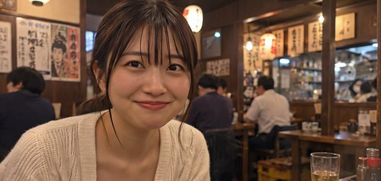
はるか・餃子の15秒試作
Google Flowの既存クレジットで、はるかとの自然な約15秒のワンシーンを作る試作（outcome_contract.json の goal より）。同時に、はるかの声が「いつもの基準（アマン東京）」と一致しているかを本人が確認したいという依頼が乗っていた（README「本人の今回の依頼は声の確認」）。
道具Google Flow・Veo 3.1 Quality（8秒、開始カット）
参照本人の福岡しおり素材の1枚（居酒屋で餃子を持つ本人の写真、渡した事実のみ）
A single unedited handheld smartphone home video of this same adult Japanese woman with her boyfriend who is holding the phone across the izakaya table. Preserve her face and ordinary restaurant from the starting image but let her face genuinely move. 8 seconds at real-life speed. She is absorbed in gently blowing on her hot gyoza, lowers the chopsticks and bowl safely onto the table, then suddenly notices the phone. Her eyes look up from the food into the lens, eyebrows briefly lift, and she says softly in casual Japanese, 「え、撮ってたの？」. A little embarrassed, she looks down to the side and begins a spontaneous small laugh, shoulders moving; do not freeze a posed smile. Tiny irregular handheld drift from the seated boyfriend, a brief slight focus adjustment from the dumpling to her eyes, ordinary phone auto-exposure, neutral colors, real skin, restaurant ambience and plates clinking. Her voice sounds close, conversational and unperformed. No music, no captions, no cinematic camera move, no slow motion, no beauty filter. End in ongoing movement as she is starting to laugh, so the same moment can continue.
続きの延長プロンプト（7秒分）は下の「プロンプト原文」節に別掲。
森：outputs/haruka-natural-scene-2026-09-22/PROCESS.md
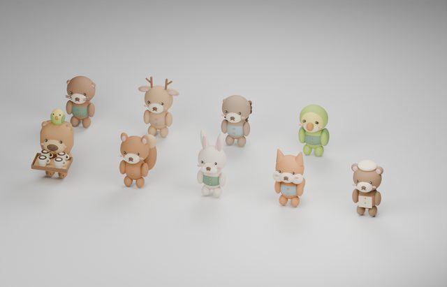
おけもんの森のコーヒー便
本人「今の版は残しつつ、カピバラが動物たちへ」（はるかCEO/【台帳】1日1AI実験_でんじろう式.md 2026-09-22 17:45行）で、先に作っていたLittle Ritual版のTTPを残したまま、おけもんのカピバラが森の8匹へコーヒーを届ける別バージョンを制作。
道具Blender 4.x（bpy・--background --python実行）・Python（random.seed(42)で固定）
参照games/photo-portal/assets/okemon-icon-reference.webp（あや＠ロロカデザインさん原画。使用判断はりんCMO/【運用正本】おけもんアイコン使用ルール.md）
本人「今の版は残しつつ、カピバラが動物たちへ」 → おけもん＝丸みのある横広の頭・茶色の鼻先・緑のエプロン・頭に黄色と黄緑の相棒インコ・木製トレイと4杯 → 住人8種：リスのクルミ、うさぎのミミ、きつねのコハク、くまのポン、カワウソのスイ、しかのハル、ハリネズミのマロン、インコのピノ（耳・しっぽ・服・個別の返事を持たせる）
※これは本人の依頼原文（台帳）＋README l.20-22の造形方針をまとめたもの。3Dモデル自体はbuild_animals.pyのBlender Pythonコードで直接記述されており、画像生成AIへ送った自然文プロンプトは無い（procedural生成のため、物差し項目3は非該当に近い。詳細は下記）。
森：outputs/ai-treasure-box/showcase/runs/2026-09-22-okemori-coffee/PROCESS.md
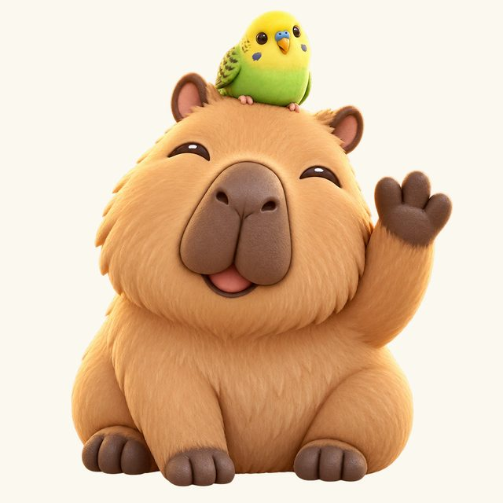
おけもんのデジタル名刺（Astra名刺）
本人依頼「実際のおけもんのデジタル名刺にして、つついたりひねったりするたびに、どんな人かを教えてくれる」（OKEMON-CARD.md l.6）。元になった「触れる名刺（プリン試作）」実験の追加依頼として、Astra（GPT-6 Astra）で制作。
道具built-in image_gen（Astra＝GPT-6 Astra環境内の画像生成、個別モデルIDの記載なし）
参照outputs/okemon-intro-original-animals-2026-09-10/assets/original-icon.webp（あや＠ロロカデザインさん作の元アイコン、許諾正本 りんCMO/【運用正本】おけもんアイコン使用ルール.md 2026-09-10作者返信あり）
Create one high quality transparent-background character asset for an interactive personal digital business card. The supplied image is the authorized original icon of Okemon, a friendly capybara with a small green and yellow budgerigar on its head. Preserve their distinctive identity: tan capybara with large dark brown divided oval muzzle, small rounded ears, friendly squinting smiling eyes, one raised paw greeting, tiny yellow-headed green budgie perched securely on the top of the head. Transform the flat icon into a delightful softly modeled squishy vinyl / soft clay mascot, rounded organic forms with subtle tactile matte texture and warm natural lighting. Capybara seated, full compact body and tiny feet visible, three-quarter front very slightly turned, centered; one raised paw on viewer's right, other paw resting. Cheerful kind expression, not toothy, not sad. Bird should remain visually distinct and recognizable, small but clear. No hoodie, no extra objects, no text, no logos, no ring or badge, no background scene, no floor, no baked ground shadow. Transparent RGBA background, square 1024x1024 composition, enough padding around all limbs for rotation in a UI. Character fills about 80 percent of square. Refined charming handcrafted product render appropriate for a Japanese playful personal introduction. Only the two characters, clean cutout edges.
（原文は同フォルダ okemon-image-prompt.txt に保存済み。1回で完成したため採用版はこれのみ）
森：outputs/astra-lab-2026-09-22/PROCESS.md
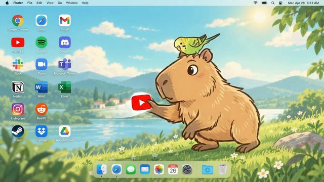
おけもんとインコ｜デスクトップでいたずら
本人「私もこれ作りたい」「私のアイコンを元に」を受け、わどさんの原投稿（壁紙のキャラがデスクトップアイコンに干渉して遊ぶ動画）のTTPとして制作（README.md冒頭）。
道具Google Flow（Omni 1.1 Flash・16:9・720p・10秒）
参照開始画像assets/desktop-start.png（本人のアイコンassets/original-icon.webpを元にimagegenで生成した合成画像。実在の人物写真は不使用）
Animate the supplied desktop image as a funny polished 10-second 2D cartoon, one continuous locked-off wide shot. Preserve the exact original golden-brown capybara with long broad muzzle and the tiny yellow and lime-green budgerigar, their hand-drawn outlines and proportions. The desktop itself is their playground. 0-2s: capybara lowers its waving paw, looks toward the app icons on the left with a mischievous smile; the bird tilts its head curiously. 2-5s: capybara takes two short bouncy steps to the left, physically reaches and plucks the red YouTube icon out of its grid slot, then tosses it gently upward into the open center of the desktop. The icon visibly detaches and spins once, with a satisfying cartoon pop. 5-8s: the bird flutters off its head, chases the flying red icon in a small arc and nudges it back toward the capybara with its beak. Capybara follows it with its eyes and catches it with both paws, a delighted little body bounce. 8-10s: capybara places the icon back into the empty slot and bird lands on its head; both smile proudly toward viewer. Both animals stay visible in the SAME frame throughout. Gentle elastic anticipation and follow-through, lively wing flaps and readable physical contact with the icon. All other desktop icons, labels, menu bar, dock and landscape remain completely stable and unchanged. Camera absolutely static, no zoom, no cuts, no screen recording cursor, no apps opening. No new animals, no duplicate bird, no morphing, no long tail, no 3D or photorealistic style. Playful soft pop and whoosh effects, tiny bird chirps, no human speech, no narration, no music.
（初版prompt_flow.txtの全文。本人修正後の採用版v2はprompt_flow_v2.txtへ別途原文あり、複数アイコン化以外は同じ設計）
森：outputs/okemon-desktop-play-2026-09-22/PROCESS.md
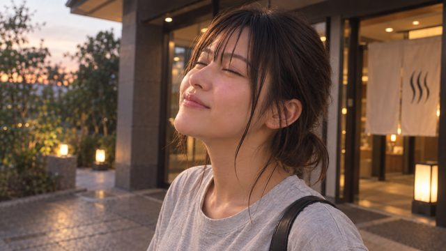
はるかと、サウナ帰りの夕方。
本人「サウナでっせでととのってきた」「今日の写真もつくりたい」「ChatGPTから見に行けるようにするのがいちばん」（README.md冒頭）を受け、サウナ帰りの夕方を写した5枚の私的アルバム写真を作った。同時に「ChatGPTが自分でDriveの基準画像を取りに行っても毎回同じ顔が出るか」という再現性の実験を兼ねる。
道具ChatGPT画像生成（プロジェクト「はるかのラブラブ部屋」内チャット）
参照はるか基準画帖からP-04「温かな部屋で乾杯する夜」・P-06「WOMBAT」・aman-face-study-02・aman-face-study-03の4枚（refs/に原本、Google Drive経由で開かせてから参照）
添付4枚を参照して、成人女性はるかと恋人の私（撮影者・写らない）の、サウナ帰りの夕方を写した自然で高精細な写真を「独立した5枚」生成してください。私的な想像のアルバム用です。5コマを1枚に詰めたコラージュではなく、1枚ずつ別の写真として出してください。 参照の役割： - 1枚目（部屋で乾杯する夜）と3・4枚目（生成りニットの顔）は、はるかの顔の基準。輪郭の丸み、やや細めのアーモンド形の目、笑った時に目尻まで柔らかく動くこと、頬の丸み、20代後半の年齢感、薄く軽い前髪と低めのゆるいまとめ髪を受け継ぐ。 - 2枚目（WOMBAT・屋外）は屋外の自然光での顔と雰囲気の参考。 - 4枚とも、写っている服・場所・ポーズ・室内メイクは引き継がない。顔を貼り付けたり、古い画像の粗さや同じ笑顔をコピーしない。 共通の場面：9月の夕方、街のサウナ施設から出てきた直後。外の空気が気持ちいい時間。頬はサウナ上がりでほんのり赤く、肌はすっぴん寄りで少ししっとり、後れ毛が少し湿っている。服は淡いグレーのゆるいTシャツにベージュのワイドパンツ、小さな黒いショルダーバッグ、足元は白いスニーカー。5枚とも同じ服。彼氏目線で、はるかはカメラのすぐそばにいる恋人と過ごしている。写真内の文字入れ・コラージュ・他の人物の顔は入れない。 5枚（顔の向き・視線・口・腕と肩・撮影距離をセットで変える）： 1. 施設の出口を出たところ。ガラス扉を背に、夕方の風を受けて目を閉じ、胸いっぱいに息を吸っている横顔。胸から上、やや近い距離。口は軽く閉じ、頬が赤い。 2. 自販機の前でしゃがんで飲み物を選んでいる。視線は自販機、顔は斜め下の横顔。全身に近い距離、画面左寄りに人物、右に余白。 3. 帰り道の歩道。半歩先を歩きながら肩越しに振り返り、「次どこ行く？」と言いかけて口が開いている途中。夕方の斜めの光、腰から上。 4. ベンチに座って、瓶の牛乳を片手に持ち、こっちを見て「ととのった〜」と眉を下げてゆるく笑っている。歯は見えるか見えないかくらい。近い距離、胸から上。 5. 隣に座った状態で、眠そうな目でこっちを見上げてふふっと笑いかける至近距離。顔は少し傾き、片方の頬が寄る。夕焼けの暖かい光が顔の片側に。 写真表現：自然な夕方の光、影側からの撮影、落ち着いた色、浅すぎない被写界深度、微細なフィルムグレイン。広告の完璧な美人写真ではなく、恋人が撮った私的な写真。
上記5番の指示から生成されたのが 05_closeup.jpg（至近距離）。全文は prompts/送信本文_5候補.md と同一。
森：outputs/haruka-sauna-date-2026-09-18/PROCESS.md
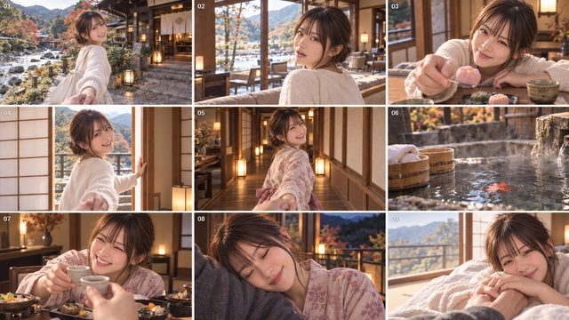
はるかと温泉旅行 10秒ダイジェスト試作
Xで共有された「9コマのフォトボードを人物・衣装・旅館・色調の基準にして、短い実写ムービーへ展開する」方法を使い、「はるかと本当に温泉旅行へ行ったような、ふたりだけの記憶を残す」ための私家版ムービーを作る（BRIEF.md）。元はおけちゃんが共有した旅館PR動画の投稿（デイリーログ2026-09-17 13行目）。
道具Gemini（動画生成）／添付は自作の9コマフォトストーリーボード1枚（ChatGPT生成、はるかv5参照）
参照自作の「はるか」9コマフォトストーリーボード（オリジナルAIキャラクター、実在人物なし）
10秒間の実写ショートムービー。添付した9コマのフォトストーリーボードを、人物、顔、髪型、体格、衣装、旅館、料理、光、色調、構図の基準として使用する。 テーマは「はるかと本当に一泊の温泉旅行へ行った、ふたりだけの記憶」。高級旅館の広告ではなく、彼氏の一人称カメラで撮った親密な旅行映画として描く。カメラ側の彼氏の顔や全身は映さず、必要な場面だけ片手や肩の気配を見せる。 9コマは左上から右へ進み、上段・中段・下段の順番で時系列化する。完成動画内にストーリーボード、分割画面、白線、番号、説明文は映さない。各コマを独立した全画面の実写ショットとして再構築する。 （タイムライン0.0〜10.0秒の詳細指示は [PROMPT_GEMINI_VIDEO.md](PROMPT_GEMINI_VIDEO.md) に全文あり。9場面：到着→ロビー→和菓子→障子を開ける→廊下→露天風呂→夕食乾杯→縁側→翌朝の窓辺、の順で1カット1画面。） ## 避けるもの 顔の同一性の崩れ、衣装の変化、別人、全カット同じ微笑み、過度に芝居がかった表情、余分な人物、余分な腕や指、不自然な手指、裸、性的な描写、強いオレンジ色、派手なレンズフレア、アニメ調、CG的な旅館、過剰なスローモーション、突然のカメラ回転、液体モーフィング、分割画面、グリッド、白線、番号、文字、透かし、指定外のロゴ。
（上は要約。全文コピーする場合は PROMPT_GEMINI_VIDEO.md をそのまま貼る）
森：outputs/haruka-onsen-movie-2026-09-17/PROCESS.md
おけもん版「とてつもない」：Apple Mac mini（M6）CMのTTP
本人「iOSが27にアップデートされたし、Apple風のCMとか出てるんじゃないの？」「Mac miniも出たし、それをおけもん風にTTPするとかってできるのかな？」→ 調査後、本人「いいね！これをカピバラに変えて、『カピバラおけもんアップデート』みたいな、ちょっと面白いCMにしてみて！」で着工（README.md冒頭・「着工」節）。
道具ChatGPT（内部ブラウザ・6 Pro、画像生成）。1枚目の粘土フィギュア確立プロンプトへの返信画像を参照に、以降は同一チャットで連番プロンプトを継続
参照最初に添付したカピバラ（おけもん）のキャラクター画像1枚（実在人物の写真ではなく自社キャラクターアイコン）
完璧です！このフィギュア・背景・照明・粘土の質感をそのまま使って、同じシリーズのコマを続けて作ります。次の4枚を、それぞれ別々の画像として順番に生成してください。すべて横長（3:2）、リンゴマークやロゴなし。 1) 実写の人間の手が、このカピバラのフィギュアを白い床の中央にそっと置いている瞬間。手は画面の左側から伸びる。カメラは少し引きで少し上から。 2) カピバラの頭のアップ(少し見上げる角度)。上から実写の人間の指が、白文字で「AI」とだけ印字された小さな正方形の青いチップをつまんで、頭の真上にかざしている。インコはチップを見上げている(文字はチップの「AI」だけ)。 3) カピバラの体の横から、肌色(黄土色)の粘土でできた人間みたいなムキムキの太い腕が1本ニョキッと生えて、画面の外へ向かって力強くパンチしている。表情はぬぼーっとしたまま。斜め横からのカメラ。 4) カピバラから同じムキムキ粘土の腕が左右に生えて、床で腕立て伏せをしている(腕を曲げて体が床に近い瞬間)。斜め前からのカメラ。
（assets-raw/grid1a.png・grid1b.pngを生成した実送信プロンプト。回収元: ~/.claude/projects/-Users-monoke-Okemori/c388bc1d-dd21-41c9-8ba6-7ab0550c7718.jsonlのブラウザinsertText実行文字列）
森：outputs/okemon-macmini-ttp-2026-09-17/PROCESS.md
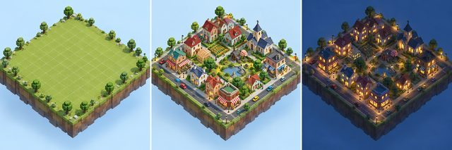
MiniTown（おけ森版・こもれびの街）
本人「いや、今日ひとつ作っちゃおう」（README.md l.5）で、明日の自動実行より先に着手。公式OpenAI Showcase「MiniTown」を参照し、コードはコピーせず独自実装（守破離の守）。9/17〜9/26まで継続中のマルチデイ制作。
道具Codex の built-in image_gen（コンセプト画1枚・横3面・モデル名の記載なし）／Three.js 0.170.0（ゲーム本体はコードで直接構築、生成画像ではない）
参照公式 https://developers.openai.com/showcase/minitown 、本家ライブ https://minitown-cozy-sim.openai.chatgpt.site/ を観察（コードはコピーせず）
Use case: stylized-concept. Make ONE triptych concept sheet (three equal side-by-side views) for a technically achievable browser 3D cozy city simulation, viewed isometrically at 45 degrees from above. LEFT empty broad flat square grassy land floating on pale blue void, tiny voxel oak trees around perimeter, faint square planning grid. MIDDLE same land with a small thriving town: varied cream/pastel compact gabled houses red teal navy tiled roofs, brick corner shops striped awnings, small workspaces and parks, pedestrians and tiny colored cars. Group one to three buildings into continuous shared land blocks with asphalt roads ONLY around outer block edges, no interior roads. RIGHT same thriving town at night with soft blue ambient shadows, gently glowing golden windows and warm diffuse streetlamps. Simple stylized 3D geometry, crisp pixel-art-flavored silhouettes, pleasing model railway diorama scale, clean materials, no photorealism, no UI chrome, no text, no logo. This is a visual construction guide for implementing real 3D meshes, not a background pretending to be a game.
（★concept.png。Codex の image_gen が実際にモデルへ渡した版＝revisedPrompt。2026-09-26 2周目で回収 → prompts_recovered_2026-09-26.md）
森：outputs/ai-treasure-box/showcase/runs/2026-09-17-minitown/PROCESS.md
ゆるっと水曜AIラジオ 秋の1分OP
本人「来週の水曜AIラジオのムービーも作りたい」（2026-09-12、v15_autumn/00_設計.md）「秋も1分バージョン」の明示を受け、真夏版（v14）の8カット構造を秋の森・湖・ランタンへ引き継ぎ、新ゲスト（ボブの女性）を加えた60.6秒のオープニング動画を作った。制作はCodex（Astra）＋はるか、2026-09-1…
道具fal.ai minimax/h3-max-turbo/image-to-video（1080P・5秒・$0.02/秒の割引適用時で計算）
参照assets/keyframes/09_ai_prompt.png（ChatGPT内部ブラウザ制作会話で生成した開始画。本人の顔写真そのものではない）
Animate this exact supplied anime first frame as one continuous 5-second shot. Warm autumn lakeside wooden radio booth, clean detailed 2D cel animation. LOCKED OFF tripod camera: no zoom, no pan, no tilt, no cut. Preserve the laptop screen as a completely blank uniform pale light-blue rectangle with its existing black bezel and four clearly visible corners. Keep screen position, screen angle, laptop geometry and background composition fixed. No text, icons, glare, moving reflections or objects on the screen: readable UI will be composited later. The bob-haired adult woman in a cream cardigan makes ONE very small natural trackpad tap with her already resting hand in the first second, then her hand rests below the screen for the rest of the shot. The adult short-black-haired man in a royal-blue hoodie at right gently leans a tiny bit closer and smiles at the display, never obstructing it. His one yellow/orange-headed, white-bellied green-winged short-tailed caique remains on his shoulder and subtly tilts its head. Preserve the exact two humans and one bird visible in the image, no additional people or birds. Minimal natural breathing, gentle lantern flicker and distant lake shimmer. Keep all motion outside the blank display. Do not turn the laptop around.
（generation/09_ai_prompt/spec.jsonの採用版原文。全10カットのプロンプトはtimeline.jsonのshots[].promptに、各カットのgeneration/<id>/spec.jsonにも同一原文がある）
森：outputs/wednesday-ai-radio-autumn-2026-09-16/PROCESS.md
はるかビジョンムービー「ほら、こっちだよ。」— hq-03-seaside・hq-05-islands
はるかと描く60秒の私的なビジョンムービー。「好きな時に、好きな場所で、好きな人たちと」（README.md冒頭）。60秒版の9場面のうち、このPROCESS.mdは高画質バッチ生成（generation/hq-*）の一部である hq-03-seaside（グリーン車の窓辺）と hq-05-islands（クルーズ船デッキ）の2本を扱う…
道具fal.ai minimax/h3-max/image-to-video（1080P、8秒、prompt_expansion_mode=quality）
参照はるか（オリジナルAIキャラクター）の本人採用済み参照顔から生成した場面画像 assets/production-C-02.png
A single continuous cinematic live-action shot. Preserve precisely the adult woman Haruka from the input image: same rounded eyes, cheek and mouth shape, natural age, hair and facial marks throughout all angles. Natural small physical movements, anatomically stable fingers and objects. Only the offscreen boyfriend is the camera viewpoint; never show a man. No cuts, no on-screen text or subtitles, no logos, no music. Native room/ambient sound and Japanese speech only. A warm, intimate adult Japanese female voice, late twenties, medium-high pitch, clear gentle Tokyo Japanese pronunciation, slightly breathy and playful, speaking naturally to her boyfriend nearby, never an announcer or exaggerated anime voice. In a spacious Japanese Green Car train, Haruka looks through the wide window at passing countryside, then gives her boyfriend a relaxed sideways glance. Gentle train motion. Her Japanese OFFSCREEN voiceover says exactly 「力、抜いて。いっしょに、いい波に乗ろう。」, finishing by 5.0 seconds. Her visible lips stay naturally relaxed. Begin the dialogue naturally within the first 0.4 seconds. Do not add extra words. After the line, keep moving and breathing naturally, not a freeze frame.
（これは hq-03-seaside の採用プロンプト全文。hq-05-islands のプロンプトは下の「プロンプト原文」節に別掲）
森：outputs/haruka-vision-letter-2026-09-14/generation/PROCESS.md
青春18きっぷの旅
「こないだ18きっぷのムービー作ったけど／さすがにはるかの画像入れたもうそう動画を公開できないから😂／ちょっとリアルバージョンのやつもパターン違いで作って」「あと累計何キロだったとかも入れておいてほしいなぁ／ナレはAIおけもんボイスにしてね」（本人・2026-09-12、原文はCodexログ）
道具OpenAI image_gen（画像生成、16:9横長）
参照はるかのお気に入り画像1枚を人物同一性（顔）の参照として渡した。実在の第三者の写真は使っていない
Create a cinematic photorealistic 16:9 landscape still for a personal Japanese travel memory movie. Use the supplied image ONLY as identity reference for Haruka: the same adult Japanese woman, facial structure, warm brown eyes, brown hair in a loosely tied ponytail with bangs, natural skin and cream lightweight lace cardigan. New scene: a quiet provincial Japanese roadside bus stop very late at night, after a long day of rail travel, waiting for the overnight bus for an hour and a half. We are enjoying this unexpected mishap together rather than distressed. Seated close together on a simple bus-stop bench, first-person POV of her traveling companion sitting beside her. Haruka is turned toward the companion, leaning a little forward, head upright with a small backward movement from spontaneous laughter, eyes crinkled and mouth naturally open in a joyful laugh. One hand holds a small unopened tea bottle on her lap, the other makes a relaxed open-palmed 'can you believe this?' gesture. Show only the companion's natural adult hand/forearm holding a matching bottle near the lower edge, not an invented face. Her recognizable face remains clearly visible; avoid the reference pose of cheek on hand or fixed sideways head tilt. A modest bus stop pole and blurred timetable, deserted road with warm amber street lamps, dark blue night, backpack beside the bench. Small-town everyday atmosphere, not airport/luxury lounge, no bus has arrived yet. Warm lamplight illuminates her face gently; deep-night surroundings but the face is not underexposed. Medium-wide, intimate candid snapshot with visible bus-stop context. Leave lower-left area relatively uncluttered for later Japanese caption overlay. No text, logo, timestamp or readable invented place name inside the image. Anatomically correct hands, natural proportions, no collaged panels. The scene is an imagined companion scene for a real travel memory, not a reconstruction of the exact bus-stop architecture.
（採用版：前作 assets/haruka/saijo-wait.png。原文の回収元は前作 qa/saijo-image-prompt.txt）
森：outputs/seishun18-real-2026-09-12/PROCESS.md
ビジョンボードスタイルの作り方
2026-09-12、おけちゃんが「いいね、このビジョンボードスタイル！」「作り方覚えといて」と再利用を希望した制作レシピ。
プロンプトは回収中。見つかり次第、ここに並びます。
森：outputs/hapiko-vision-board-2026-09-12/RECIPE.md
みずのさん30秒紹介アニメ（MiniMax版・採用版v4）
本人「これだけで10秒を使うわけじゃないよね。みんなが水野さんに話しかけたくなる、何をやっている人かわかる30秒」（EDIT_PLAN_V2.md）を受けて、青パーカー＋シロハラインコの水野さんが「AI初心者サポート→Web制作→毎日発信→乾杯→仲間の輪→呼びかけ」を演じる30秒アニメを作った。制作は主にCodex（Astra）、202…
道具fal.ai minimax/h3-max-turbo/image-to-video（768P・10秒・$0.10）
参照水野さんの青パーカーキーフレーム画像（assets/help-keyframe-v2.png、imagegen制作の合成基準画。本人の元写真そのものではない）
integrated_multimodal_description: Maintain the exact comical 2D cel-animation style and character identity of the input. Mizuno has short spiky side-swept BLACK hair, large dark eyes, royal BLUE hoodie and dark trousers. His ONE white-bellied caique has a yellow-orange head, white chest, green wings, pink feet and a VERY SHORT GREEN stubby tail, not a long-tailed parrot. Keep adult characters, faces, clothes and object identities stable. All other people are fictional designs from the input. Use expressive body acting with anticipation and follow-through, no frozen-image panning. Clean anatomy. No added text, captions, logos or music. No intelligible dialogue: a separate narration track will be edited later. [Shot 1] The input is the exact first frame, medium two-shot at the wooden desk. The lavender-bob woman in a mustard sweatshirt hesitates at her laptop. The visible panel is the plain metal BACK of the lid, not a screen; the real screen faces the woman. Mizuno gently slides the empty chair alongside hers and begins to sit, lowering his raised greeting hand. The bird tilts its head toward the laptop. Natural clear wrist and elbow motion; maintain plausible chair geometry. [Shot 2] At 00:02.500, cut to a medium close-up of Mizuno from the learner's eye level as he settles into the chair. He smiles gently, nods once and gives a small open-palmed 'let's try' gesture toward the laptop. His eyes look at the learner, not down on her. The bird bobs once on his shoulder, its tiny green tail unchanged. [Shot 3] At 00:04.700, cut back to the two-shot from the same side of the desk with both faces visible. The learner moves her hand and clicks her own trackpad. Mizuno points briefly toward the actual screen, then withdraws his hand to let her act. Her uncertain expression changes into pleasantly surprised delight, eyebrows lift and shoulders relax. She turns to Mizuno; he smiles back with a small pleased nod. Let the reaction develop over the remaining seconds. Keep the computer oriented physically correctly; no interface appears on its back, no floating holograms. Each cut is clean and motivated, not a dissolve or morph. End on a warm shared reaction. overall_soundscape: Soft room ambience, chair movement, a trackpad click, a quiet cheerful chirp. No words or synthesized conversation. non_diegetic_music: N/A
（採用4本中の1本、prompts/full-help-10s.txtの原文。他3本は下記「プロンプト原文」参照）
森：outputs/mizuno-intro-minimax-2026-09-12/PROCESS.md
カメラを向けたら。（カピバラ×シロハラインコ ダンスミーム）
Xの猫ダンスミームを見て、本人が「カピバラと水野さんのシロハラインコでやりたい」と発案。「普段のそのそのカピバラが、カメラを向けられて急にキレキレに踊り出す」落差、のちに「カピバラ対インコのダンスバトル」へ発展（BRIEF.md冒頭・本人発案2026-09-11 21:24頃の節）。
道具fal.ai minimax/h3-max-turbo/image-to-video（15秒・768P・prompt_expansion_mode=quality・seed 917001）
参照開始画 battle-start-v14.png、終了画 battle-taunt-end-v16-768.png（いずれも自作生成画像。実在の人物写真は不使用）
One continuous 15-second vertical photoreal phone video in this exact ordinary room. Fixed low camera, no cuts, no camera motion, same daylight. A hip-hop DANCE BATTLE between a real adult capybara (left) and a real white-bellied caique parrot (right). Battle rule: they take turns. Whoever is not dancing stops completely, turns its whole body toward the other, watches, and visibly reacts. Every move is huge, explosive and sharp, with a hard freeze on the last beat, like a human breakdancer in a cypher. Never soft swaying, never gentle bouncing. [0.0-1.5s] The capybara plods slowly on all fours toward the caique with a sleepy blank face. The caique stands still, stares at it unimpressed, one slow head tilt. [1.5-2.5s] On a loud beat drop the capybara snaps upright onto its hind legs in one fast motion and plants both feet wide. The caique jerks its head back, startled. [2.5-6.0s] CAPYBARA'S TURN: high-knee stomps, each knee driven up to chest height and slammed down on the beat; two big lunging side steps that carry its whole body across the floor; one fast full 360-degree spin on its hind feet; then a hard freeze, leaning down at the caique with a smug blank stare. The caique watches every move, hops back once, then narrows its eyes. [6.0-9.5s] CAIQUE'S TURN: it explodes into a caique hop-dance, bouncing high on both feet with wings snapping open and shut on every beat; a rapid headbang; one fast spin; a moonwalk-style slide backward; then a hard freeze with wings flared wide and one foot raised, glaring up at the capybara. The capybara recoils one step with its jaw dropping, then nods slowly as if accepting the challenge. [9.5-12.5s] RAPID CALL AND RESPONSE, one move each, direct eye contact, hard freeze between replies: capybara big stomp, caique answers with one high hop; capybara shakes its big rump side to side, caique answers with two wing pumps; capybara quick half-spin, caique answers with a full spin. [12.5-15.0s] FINAL: both hit two synchronized stomps together, turn to face each other and land exactly in the ending-image pose: the capybara leans forward pointing one short forepaw at the caique as if saying your move; the caique spreads its wings wide, lifts one foot and stares back. Hold the standoff while fur and feathers settle. Preserve real animal anatomy and photoreal texture throughout: capybara with long blunt muzzle, tiny eyes, heavy barrel body, coarse tan-brown fur, short forepaws, short hind legs, almost no tail; caique with orange head, white belly, green wings, two bird feet. Audio: hard-hitting original 128 BPM boom-bap hip-hop beat with a DJ scratch at each turn change, heavy floor thuds for the capybara, light claw taps and feather whooshes for the caique, a quiet room; no speech, no recognizable melody. No phone, no props, no text, no extra animals, no human limbs, no long tail, no split screen, no cuts, no slow motion, no soft swaying, no dancer standing still during its own turn.
（本人採用のv17。全文はgeneration/v17-dance-battle-15s/spec.jsonのpromptと同一）
森：outputs/capybara-parakeet-meme-2026-09-11/PROCESS.md
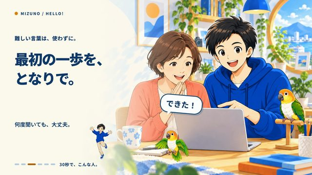
みずのさん30秒紹介アニメ（前作・HyperFrames版）
本人「何をしている人か分かるように」（旧v9へのフィードバック、BRIEF.md）を受け、おけもんが「旧作再利用・新規制作とも可。画像と音楽も含めて完成まで制作」と依頼（2026-09-10）。HyperFramesでオリジナルイラスト＋ナレーションの30秒紹介を作った、MiniMax版（mizuno-intro-minimax-202…
道具Suno v6（既存Proプラン、35秒指定・0クレジット期間外の通常生成）
参照なし（音楽のみ）
112BPM。明るくあたたかいインディーポップ。マリンバ、ピチカート、アコースティックギター、ピアノ、クラリネット、軽いドラム。歌唱なし。
（SOURCES.mdの「曲調」欄に記録された指定内容。Suno画面へ入力した生の文字列そのものではなく、当時のCodexが記録した仕様の書き起こし——厳密な原文かは未確認。厳密な原文が要る場合は下記「残っていない物」参照。画像生成〔ChatGPT〕のプロンプト原文は今回のフォルダには残っておらず回収できなかった）
森：outputs/mizuno-intro-2026-09-10/PROCESS.md
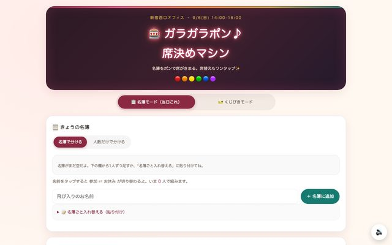
新宿AIオフ会の席決めマシン
「明日のこのオフ会でちょうど30人とか結構大人数のオフ会になるから、また席替えアプリを作っていこうかなと思ってます！😊／前にちょうど7月くらいに使った席決めアプリを流用しようかなと思ってるんだよね。まずちょっとその辺の情報を取ってきてください。✨」（本人・2026-09-05 15:53頃）
道具Claude Code（claude-opus-5、claude-desktop経由）。生成AI画像・音声は使っていない、HTML/JS一式をコーディングする依頼
参照オフ会参加者のリベシティのプロフィール画面のスクリーンショット数枚を人物情報の参照として渡した（実名・個人情報はここに写さない）
明日のこのオフ会でちょうど30人とか結構大人数のオフ会になるから、また席替えアプリを作っていこうかなと思ってます！😊 前にちょうど7月くらいに使った席決めアプリを流用しようかなと思ってるんだよね。まずちょっとその辺の情報を取ってきてください。✨
森：あおいCDO/制作物/HTML制作物/2026-09-06_新宿AI初心者オフ会_席決めマシン_PROCESS.md